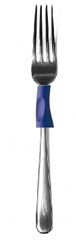
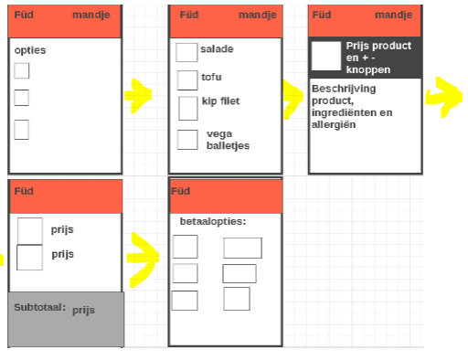
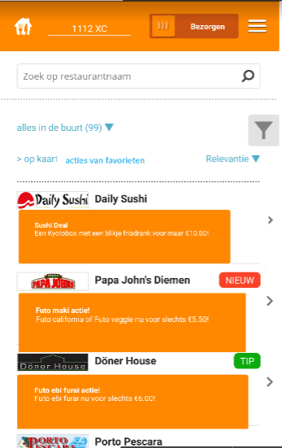
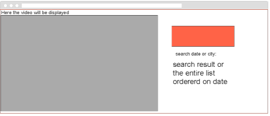
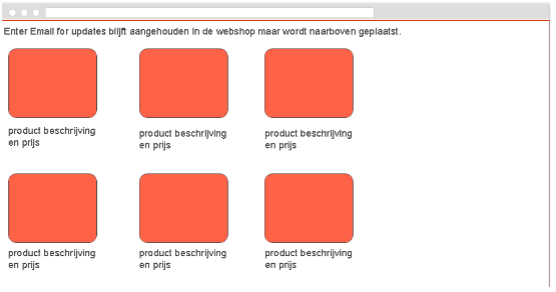
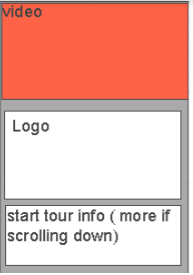
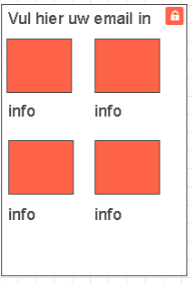
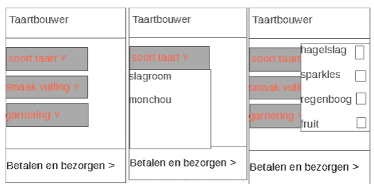
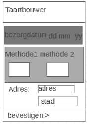

Hier vertel ik per werkcollege opgave wat ik heb geanalyseerd, onderzocht of hoe bepaalde ontwerpen tot stand zijn gekomenen. Er zal een afbeelding bij staan van het uiteindelijke design samen met een link naar mijn drive met het volledige bestand.
Voor dit werkcollege heb ik de verschillende manieren onderzocht waarop mensen interacteren met een vork. Ik heb dit geanalyseerd door mijn eigen interactie te observeren, users story's op te stellen en andere users te ondervragen. Mijn verbetering voor de vork is uiteindelijk een verbeterde grip om ervoor te zorgen dat mensen met grote handen makkelijker een vork vast kunnen houden.

klik hier voor het originele document
Voor dit werkcollege heb ik samen met een medestudent ppersona's en een customer journey opgesteld voor een product. Aan de hand van de persona's en de customer journey hebben wij drie concepten opgesteld. Het eerste concept was een applicatie die inspeelt op je geweten om je aan het sporten te krijgen. Conccept nummer twee was de sporthulpschoen. De sporthulpschoen helpt mensen met iets aan hun been om makkelijker te sporten. Het derde concept was de sportschoolbonus applicatie. Met deze applicatie kun je bonussen verdienen bij de sportschool. Door middel van bonussen wordt de user gemotiveerd om naar de sportschool te gaan.
klik hier voor het originele document
Voor dit werkcollege heb ik user onderzoek gedaan naar de ANWB onderweg applicatie. Ik onderzoek of users liever hebben dat de ANWB app tankstations laat zien op basis van prijs in plaats van afstand. Ik heb eerst een testscript opgesteld en vervolgens beschrijf ik de gedane onderzoeken. Ik trek de conclusie dat een filter optie de beste manier zou zijn zodat de users zelf kunnen selecteren wat zij het belangrijkst vinden.
klik hier voor het originele document
Voor dit werkcollege heb ik een applicatie ontwikkelt voor een denkbeeldig bedrijf Füd. Ik heb hiervoor een persona en job story's opgesteld. Eerst heb ik de applicatie uitgewerkt in schetsen en vervolgens in wireframes.

klik hier voor het originele document
Voor dit werkcollege heb ik een verbetering gemaakt aan de thuisbezorgd applicatie aan de hand van de principe's van Cialdini. De verbetering is een scherm waar de user aanbiedingen kan zien van de aanbieders in zijn favorieten lijst. De pagina moet de effectiviteit van thuisbezorgd verbeteren omdat het inspeelt op de principes van dat mensen continu willen zijn en eerder ergens wat kopen als zij dit bedrijf leuk vinden.

klik hier voor het originele document
Voor dit werkcollege heb ik de website van kanye west geanalyseerd en verbeterd. Ik tracht duidelijkheid te verschaffen over de homescreen door de indeling te veranderen. Users weten door het veranderde homescreen beter dat zij ook kunnen scrollen. Ik tracht ook om de gebruiksvriendelijkheid van de website te vergroten door de webshop te integreren in de site in plaats van de email die je nu krijgt als je je daarvoor inschrijft. Helaas zijn alleen de wireframes uitgewerkt en ontbreekt het echte grafische design.




klik hier voor het originele document
In dit werkcollege heb ik wireframes gemaakt van een mobiele applicatie voor zelfgemaakte taart.nl. Voor deze opdracht heb ik eerst de benodigde inputs en diens volgorde vastgesteld. Hierna heb ik de beste input controls vastgesteld. De input momenten heb ik verwerkt in wireframes.


klik hier voor het originele document